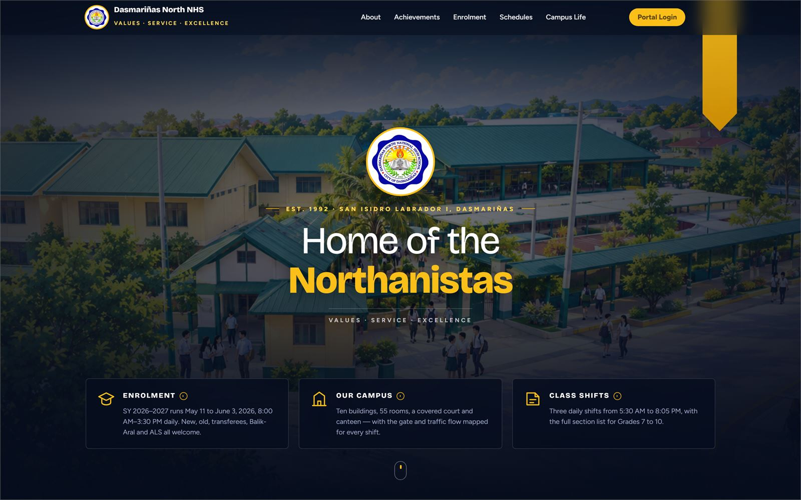

Frontend
Hand-written HTML and CSS, mobile-first layouts, and vanilla JavaScript for interactivity. This site is the example — no framework, no build step.
Open to internships & OJT
I'm Jose Gio Melicano — an Information Systems student who builds websites end to end, from the layout in the browser down to the MySQL tables behind it.
Scroll down
About me
I'm a fourth-year BS Information Systems student at Kolehiyo ng Lungsod ng Dasmariñas, graduating in June 2027. Most of what I know came from building things and breaking them — starting with HTML and CSS, then JavaScript, and eventually the PHP and MySQL side when a static page stopped being enough for what I wanted to make.
Most recently that meant building a school management system for Dasmariñas North National High School — three role-based portals, a grade approval workflow, and an analytics dashboard, on top of a MySQL database I designed myself.
I'm looking for an internship or OJT placement where I can work on real projects with people who know more than I do. I'm comfortable being the one who asks questions, and I'd rather be given something slightly beyond me than something safe.
What I work with
Listed without percentage bars, because a number next to a language doesn't mean anything. These are the things I've actually built with and can talk through.
Hand-written HTML and CSS, mobile-first layouts, and vanilla JavaScript for interactivity. This site is the example — no framework, no build step.
Server-side PHP with MySQL behind it — designing the tables, writing the queries, and handling login sessions and CRUD for an admin panel.
Querying data with SQL and working with it in Python — loading a dataset, cleaning it up, and charting what's in it.
Version control, a local dev environment, and the browser tools I use to figure out why something isn't doing what I told it to.
Selected work
In full detail — what each one needed to do, what I built, and what went wrong along the way.

01 — School management system
Full-stack — frontend, database design and authentication
The school needed two things from one system. Outside the login: a public site that worked on a phone, carrying enrolment dates, campus information and class shifts. Inside it: a way to move a grade from a teacher's class record, through the adviser who has to confirm it, and out to the student — with someone able to see, at any point, which of the school's hundred classes had actually handed anything in.
.sql export so the database can be backed up and restored through phpMyAdmin.The first version let a teacher edit a grade after it had already been approved and published, and the change went straight through to the student. The approval step only ran on first submission, so the entire review process could be skipped just by editing afterwards — I only caught it testing with a teacher and a student account open side by side. The fix was to stop treating approval as a one-time flag and make the grade's status a real state instead: editing a published grade drops it back to awaiting adviser review and hides it from the student until it's confirmed again. What I took from it is that a workflow isn't finished when the happy path works. It's finished when you know what every edit does to the state.
02 — Student tool
Solo — vanilla JavaScript, no libraries
Every student works their general average out on a phone calculator, and the question they actually want answered isn't "what is my average" — it's "what do I need next quarter to make honours?" Nothing answers the second one.
localStorage, so nothing is lost on refresh and no data ever leaves the device.The planner looks like simple algebra until the rounding gets in the way. Subject finals are rounded to whole numbers before they're averaged, so the general average is a step function of your next grade, not a straight line — solving it algebraically gives answers that are off by one at exactly the boundaries people care about. With three quarters at 90 and a target of 90, the algebra says you need 90; you actually only need 88, because 89.5 rounds up. So I stopped solving it and started searching it: try every whole grade from 0 to 100, recompute the whole result each time, return the first that works. 101 iterations is nothing, and it's exact by construction rather than approximately right. I verified it against 400 randomly generated grade boards, asserting each answer was genuinely the minimum.
03 — Group project
Team of students — my part: front-end and database design
A catering business taking bookings by phone and message has no reliable record of what was ordered for which event, and customers can't see what's on offer without asking for it first.
Bookings were requests rather than purchases — there was no online payment, and the caterer arranged that directly.
Get in touch
Looking for an intern, have an OJT slot, or just want to ask about something I built? Send a message and I'll reply.